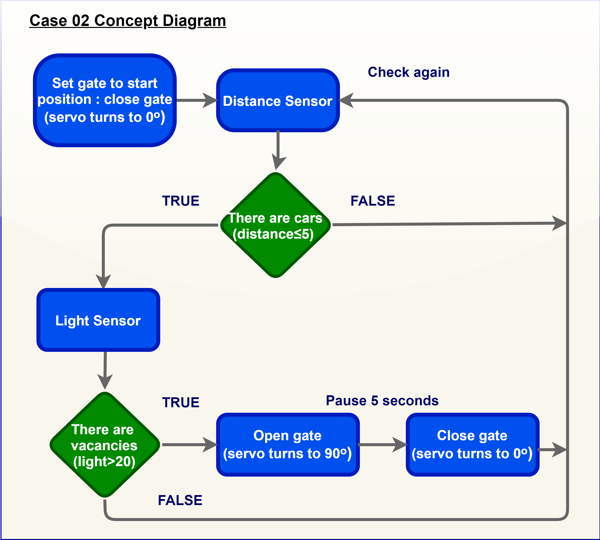
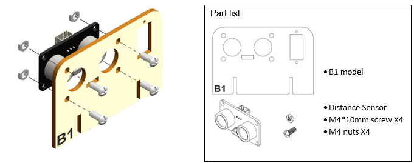
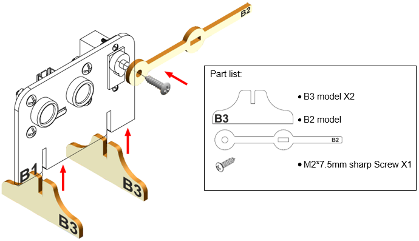
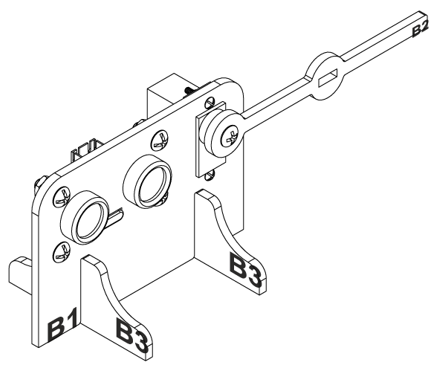
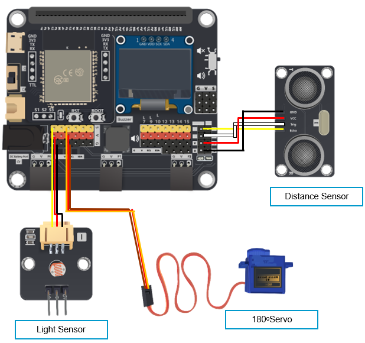
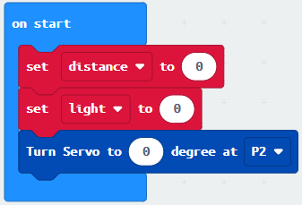
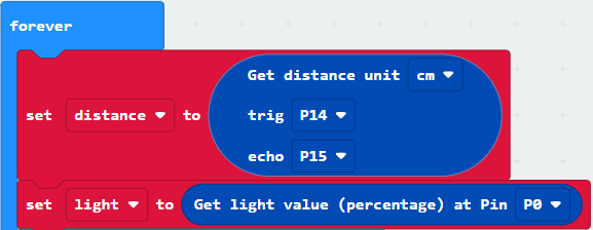
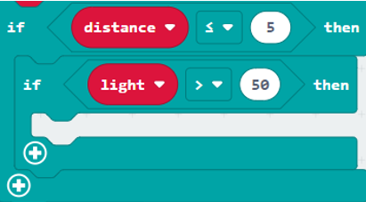
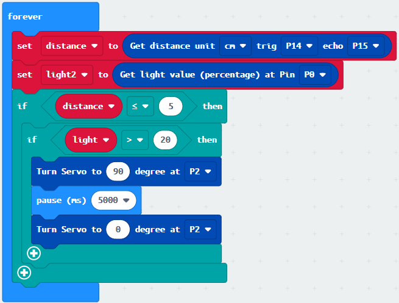

11. Case 02: Smart Car park Access Barrier¶
Level: 

11.1. Goal¶
Make a smart car park gate which opens automatically if there are vacancies in the car park and there are cars coming in.
11.2. Background¶
What is smart car park access barrier?
Smart Car park Access Barrier is used to allow people to live conveniently. It can reduce manpower and time in controlling the gate and manage information (e.g. car park vacancies). It will be opened automatically if there are vacancies in the car park and there are cars coming in.
Car park gate operation
The car park gate open and close operation is controlled by 180ᵒ servo. It will be opened if there are vacancies in the car park (i.e. detected by light sensor) and cars near the car park gate (i.e. detected by distance sensor). Otherwise, the gate will be closed.
When there are no vacancies (detected by light sensor), then the gate will keep closed.

11.4. Assembly step¶
Step 1
Attach the distance sensor to B1 model with M4 * 10mm screws and nuts.

Step 2
Attach the servo to B1 model with M2 * 10mm screws and nuts

Step 3
Attach the B2 model to the servo with servo M2 * 7.5mm sharp screw. Put B3 model onto B1 model.

Step 4
Assembly completed!

11.5. Hardware connect¶
Connect the Distance Sensor to P14 (trig)/ P15 (echo) port of IoT:bit
Connect Light Sensor to P0 port of IoT:bit
Connect 180° Servo to P2 port of IoT:bit

11.6. Programming (MakeCode)¶
Step 1
Initialize variables and turn servo to start position at the beginning.
Inside
on start, snapset variable distance to 0andset light to 0fromvariables.Snap
Turn Servo to 0 degree at P2. 
Step 2
It will continuously check the distance from distance sensor and light value from light sensor.
Drag
get distance to get distance unit cm trig P14 echo P15, store the value to variabledistance.Get light value (percentage) at Pin P0, store the value to variablelight
Step 3
When the car is in front of the distance sensor of the gate and there are vacancies in car park (light sensor value is high).
Snap
if statementinto forever, set if variabledistance≤ 5Snap another
if statementset variablelightvalue >20 
Step 4
If the statement is true, then the gate will be opened for 5 seconds and then closed.
Snap
Turn Servo to 90 degree at P2as the gate is opened.Snap
pauseto the loop to wait 5 secondsSnap
Turn Servo to 0 degree at P2as the gate is closed. 
Full Solution
MakeCode: https://makecode.microbit.org/_6xjh8hAhi81j
You could also download the program from the following website:
11.7. Result¶
The light sensor is used to check the vacancies in the car park while the distance sensor is used to detect if there are any cars coming near the car park gate
The car park gate is controlled by 180ᵒ servo. When there are vacancies in the car park and there are cars near the car park gate, the car park is available. The gate will be opened for 5 seconds and then closed to let the car entering the car park.

11.8. Think¶
Q1. How can you show the light and distance value on OLED?
Q2. Can you show signals on micro:bit LED to let drivers know there are vacancies in the car park?